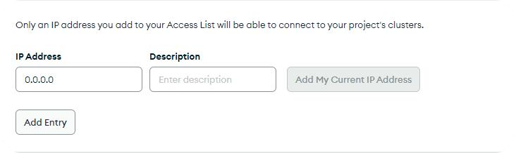
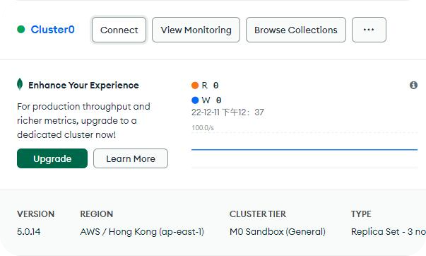
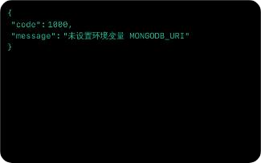
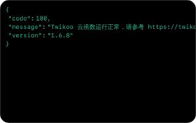

Twikoo实装&美化记录
前言
为了网站的长远发展考虑，请谨慎选择评论系统
本站的评论配置可谓是一波三折
刚开始使用Github相关功能评论令我比较中意
先后使用了 Gitalk 及 Giscus 评论系统
经过深思熟虑，决定更换至Twikoo
此文章参考官方文档，记录Twikoo实装及美化过程，可供参考
配置MongoDB
创建数据库
首先，需要申请MongoDB账号
通过邮箱验证后，需要创建一个免费数据库
此数据库将用于存放评论数据
数据库的名称可以自定义，但是创建之后不能更改
接着需要创建用户及密码，用于登录数据库

下方还需要指定能访问数据库的IP地址
因为博客需要对外开放，所以我们需要开放全部IP访问
方法很简单，添加一个
0.0.0.0 的IP就可以了
接受条款，完成数据库的创建
获取连接字符
点击数据库名称右边的 Connect
无法显示？刷新即可

点击第二个 Connect your application
复制下方显示的连接字符
此连接字符中包含 <password> 字样，请替换为数据库用户的密码
配置Vercel
部署存储库

使用GitHub快速登录Vercel
选定存储库名称，等待大功告成
Vercel放烟花庆祝时，说明已经部署完成
配置环境变量
如果不出意外，你将会看到…

不要惊慌，只是缺了一个环境变量
进入 Settings - Environment Variables
添加环境变量 MONGODB_URI，值为数据库连接字符串
环境变量名称需要全部大写
进入 Deployments，然后在任意一项后面点击三个点
点击 Redeploy，最后点击下面的 Redeploy
等待一会，大功告成！

复制Vercel提供的域名，此为 环境ID
更改配置文件
打开 _config.butterfly.yml
在 comments - use 后填写 Twikoo
并将环境ID填写在 twikoo - envId 后
保存
至此，Twikoo部署完成
本博客所有文章除特别声明外，均采用 CC BY-NC-SA 4.0 许可协议。转载请注明来自 HiPeach！
 微信
微信 支付宝
支付宝
评论